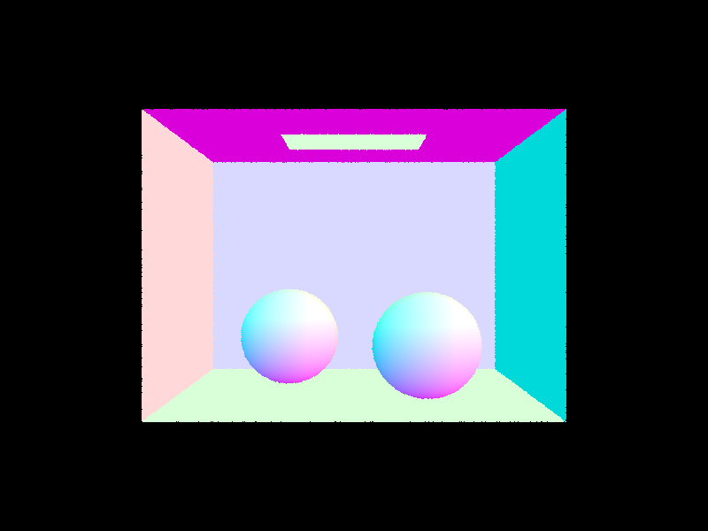
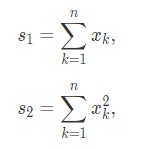

Overview
In this project, I have implemented all necessary aspects of the "rendering equation" to approximate what a 3D modeled scene would look like from the perspective of a virtual camera given some light source exists within the scene. This includes two different methods of direct lighting (where light leaves a light source, bounces off an object, then enters the camera) and additional indirect lighting (where light bounces multiple times before entering the camera - also called "global illumination"). In order to aide in this process, some important features that are technically unnecessary but needed to be added to ensure smooth, timely processing of images included a Bounding Volume Heirarchy algorithm for narrowing down the number of necessary ray intersection tests and adaptive sampling to avoid wasting computational power sampling for pixels that have already converged whenever possible.
Part 1: Ray Generation and Scene Intersection (20 Points)
Walk through the ray generation and primitive intersection parts of the rendering pipeline.
Ray generation is the process of using parameters defining the virtual camera such as field of view, location, and viewing direction to generate rays in the world space that correspond to specific pixels in the final image. To do so given some x, y pair defining a pixel's coordinates in the final image, we simply create a ray originating at the origin of the virtual camera in world space and define the ray's direction as:
(tan(radians(hFov) * (x - 0.5)), tan(radians(vFov) * (y - 0.5)), -1)Where hFov and vFov are the horizontal and vertical FOVs of the virtual camera respectively. This works because the bottom left corner of the image corresponds to a ray passing through ($tan(radians(hFov) * -0.5)$, $tan(radians(vFov) * -0.5)$, $-1$) and the top left corner corresponds to ($tan(radians(hFov) * 0.5)$, $tan(radians(vFov) * 0.5)$, $-1$), so we can simply use x and y to interpolate between the two by normalizing x and y each to a value between 0 and 1. We also use a Z direction of -1 because our virtual camera's viewing direction is in the -Z direction.

|
Once we have these rays, we can test if any ray intersects with a primitive object in the scene. If it does, for now we can simply
mark that sample as the color of that primitive object. Later, we will instead try to approximate what the radiance at that point might be based on everything in the scene.
Then, all that is left to do is take the average color of all rays
that correspond to a specific pixel, and show that color at that pixel location in our final image.
In order to detect if a ray intersects with a sphere, for instance, we can simply plug the equation for a ray (defined by origin $o$, time $t$, and direction $d$) into the
equation for a sphere (defined by center $c$, radius $R$, and point $p$) and solve for the time of intersection $t$ using the quadratic formula.
Explain the triangle intersection algorithm you implemented in your own words.
To detect if a ray intersects a triangle, on the other hand, I found it easiest to use Möller Trumbore algorithm.
Although the math looks scary, essentially all it does is pretend that the triangle is actually an infinite plane defined by the same three points that defined the triangle.
We hypothesize what point the ray would intersect such a plane at, and then calculate the barycentric coordinates of that point
on the plane relative to the triangle. By the definition of barycentric triangle coordinates, we know that if all three barycentric coordinates are positive,
then the point is inside of the triangle, and thus would signify that the ray does indeed intersect our triangle. If the barycentric
coordinates are not all positive, then the point that the ray intersects the plane with would lie outside of the triangle and thus
the ray would not intersect the triangle.
Besides just testing if an intersection occurs or not, it is also important that we return to our lighting approximator function a surface normal value as a weighted sum of the normals
of each point describing the triangle weighted by their respective barycentric coordinates. This is necessary for our surfaces to have smooth shading, as the
normal of the intersection is taken into account by the function that returns what color to display for a specific ray (est_radiance_global_illumination).

|
Show images with normal shading for a few small .dae files.
|
|
|
|

|
|
Part 2: Bounding Volume Hierarchy (20 Points)
Walk through your BVH construction algorithm. Explain the heuristic you chose for picking the splitting point.
The BVH algorithm is technically unnecessary, but ends up being extremely important for rendering of scenes that
have more than just a few primitive shapes present. This is because without a BVH tree, it is necessary to check if each ray intersects
with every primitive in the scene. With potentially tens of thousands of primitives, the time to render grows exponentially.
To get around this, a BVH tree sorts all of the objects in a scene into a tree that is quick to traverse and narrow down, as
at each level in the tree, all of the objects to the left of some splitting point are on one branch and all of the objects to the right
are on the other. This allows each ray check whether it passes to the left or right of each center point as it works its way down the tree,
needing to perform a total of only O(log N) intersection checks rather than O(N) where N is the number of objects in the scene.
To construct this BVH tree, we start by finding the bounding box that encapsulates all of the potentially intersectable objects. We then want to
split this bounding box into two separate boxes, ideally with as close to half of the objects as possible on each side. The heuristic I chose
to accomplish this simply involves calculating the average point of all the centroids of all the objects in the bounding box, and then splitting at that average point along
whichever axis of the bounding box is the longest. We can then recursively perform the same operation on each new half, working all the way down the tree until reaching a desired minimum number of objects
in a final leaf node. Now, instead of comparing against every object in the scene, a ray can compare whether it is to the left or right of each center point along the tree and make its way down the tree to a leaf node,
where it can then check it intersects each of the objects in the leaf node instead of every object in the whole scene.
Show images with normal shading for a few large .dae files that you can only render with BVH acceleration.
|
|
|
|
|
|
Compare rendering times on a few scenes with moderately complex geometries with and without BVH acceleration. Present your results in a one-paragraph analysis.
Without real world analysis to back up these ideas, it might seem like the extra computational power necessary to construct such a bounding volume heirarchy tree might not be worth the potential gain from having it, so here I can compare some rendering times of the same scene both with and without using the BVH tree. The times listed with the BVH tree INCLUDE the time taken to assemble the BVH tree on top of the actual rendering time. And just to be crystal clear, yes it really did bring the render time from over 20 minutes down to only a third of a single second for a complex model like wall-e.dae, that is not a typo.
| Model | No BVH Tree | With BVH Tree |
| wall-e.dae | 1414 sec | 0.35 sec |
| CBlucy.dae | 711 sec | 0.22 sec |
| dragon.dae | 580 sec | 0.25 sec |
| maxplanck.dae | 237 sec | 0.15 sec |
Part 3: Direct Illumination (20 Points)
Walk through both implementations of the direct lighting function.
A direct lighting function is a function that calculates how much light leaves a surface in a specific direction. The
theoretical "best" direct lighting function simply looks at how much light enters the surface at that point and uses it
to calculate how much will leave in each direction. Unfortunately, this is far too computationally expensive even for modern
computers, so we have to come up with a way of estimating this value.
The first implementation of this function that I used is uniform hemisphere sampling. What uniform hemisphere sampling does
to estimate this value is use a Monte Carlo estimator with unform, randomly sampled incoming ray directions within the
hemisphere of possible light directions. Once we have acquired an average with a handful of samples, we can estimate the total
incoming light and use the reflection equation to determine how much would leave that point in the given direction.
To do this in code, we loop through however many samples we wish to use (in our case defined by the -l parameter) and calculate a value for each sample, accumulating into some final variable L_out, and divide it by the total number of samples at the end. On each iteration we:
- Get a uniform random sample direction from within the range of possible directions in a hemisphere from the normal at the hit point of the surface
- Convert that vector direction from object coordinates to world coordinates
- Generate a new ray originating at the hit point and pointing in that direction
- Choose ray parameters to ensure that this ray doesnt intersect with the original surface (set min_t to a small positive float value)
- Check if this new ray intersects with a light source, if it doesn't, move on to the next sample
- Otherwise, calculate the light value using the estimator formula where:
- $fr$ is the $(reflectance/\pi)$ for the simple DiffuseBSDF surface of the surface given the in and out directions
- $Li$ is the emission of the light source
- $\cos(\theta)$ is the dot product of the ray's world direction (from earlier) with the direction of the intersection's normal
- $p$ is $1/(2 * \pi)$ because the probability of a particular ray in a hemisphere since there are $4\pi$ total steradians in a sphere
- If the $\cos(\theta)$ calculated is less than zero, move on to the next sample
- Otherwise, accumulate the calculated value into our total L_out
The second implementation of this function that I used is importance sampling lights. Unlike the previous method where we simply generated a bunch of random rays and hoped that some of them hit light sources, importance sampling only generates rays that are guaranteed to hit light sources. For each lighting check, we loop through all of the light sources in the scene. If the light source is a point light, we just cast one ray and factor it into our sum just as before. If the light is an area light, we generate multiple random samples that all point in the direction of the light source. The code is still fundamentally the same, just with a few small tweaks to allow this all to work:
- Rather than just looping through samples, we loop through all the light sources in the scene, and then loop through the samples within each one
- When we do the backwards raycast, this time we have to make sure that there is nothing else in the way between the light and the surface. If there is, move on to the next sample
- As we are now picking specific rays to cast, the probability is no longer uniformly random so we cannot just use $1/(2 * \pi)$ for the value of $p$. Instead, we use the sampler to calculate a new PDF for each individual sample and use that instead
With all of that working, our pixel's colors can converge with far, far fewer samples, resulting in much less noise in our final images. Below is a comparison between using uniform hemisphere and importance light sampling with the same number of samples. (64 camera rays per pixel, 32 samples per area light) The difference is massively apparent in the shadows and dark parts of the room.
Show some images rendered with both implementations of the direct lighting function.
| Uniform Hemisphere Sampling | Light Sampling |
|---|---|
|
|
|
|
|
|
Focus on one particular scene with at least one area light and compare the noise levels in soft shadows when rendering with 1, 4, 16, and 64 light rays (the -l flag) and with 1 sample per pixel (the -s flag) using light sampling, not uniform hemisphere sampling.
|
|
|
|
|
|
Although subtle, the softness of the shadow under the bunny is clearly significantly improved as the number of light rays used increases. When rendered with only one light ray, the shadow beneath the bunny is spread out over a much larger area and has dark speckles where there really shouldnt be any simply as the result of random chance. Using 4 light rays improves this drastically, and there are far less random noisy speckles, but the shadow still doesn't look genuinely smooth until we get up to 16 or even 64 light rays where there are now practically no disturbances of noise at all and we get a nice, clean, smooth shadow.
Compare the results between uniform hemisphere sampling and lighting sampling in a one-paragraph analysis.
Uniform hemisphere sampling is more intuitive and technically more "correct" as to how the real world works, but
ultimately wastes a monstrous amount of computing power calculating rays that wont actually affect the final output. Importance lighting sampling, on the contrary, is capable
of creating images that look far better with far fewer samples (and computing power) necessary by only sampling where we are certain the sample will affect the final output, but is technically
a shortcut/approximation of the real thing. Thankfully, in our simulated world, both results are capable of producing identical
results as we are not yet worrying about global illumination, so
there is no downside to using the importance lighting sampling shortcut for our purposes.
One final detail regarding the difference in results between the two is that hemisphere sampling is incapable of working with point lights,
as the probability of a randomly sampled ray intersecting the specific point of the light source is essentially zero. As importance sampling
goes out of its way to choose rays that will intersect with the given light source, it doesn't run into that problem. Below is a dragon rendered
using importance sampling with a point light source.
|
|
Part 4: Global Illumination (20 Points)
Walk through your implementation of the indirect lighting function.
Indirect lighting or global illumination is the affect that light has on our scene after it has bounced off of more than just one surface.
So, rather than light leaving a light source, bouncing off an object, and entering the camera, with global illumination enabled, we ALSO include
light that leaves a light source, bounces off an object, bounces onto another object, etc, and THEN into the camera. This is clearly more computationally
expensive, but produces more realistic results.
The actual implementation of this indirect lighting is really quite simple. When asked for the radiance at a location in the scene, first we calculate the zero bounce radiance
just as before, then we simply append the at_least_one_bounce_radiance at that point which can be calculated as follows:
- Calculate the one bounce radiance at that point using the methods from before (importance sampling in this case)
- Randomly sample a direction to continue on towards
- Create a new ray in this direction and calculate if it intersects with anything else in the scene
- If so, calculate the at_least_one_bounce_radiance at that point, and incorporate it into the value returned at THIS point based on the pdf of the chosen ray $1/(2 * \pi)$, the angle between the ray and surface normal $\cos(\theta)$, and the reflectance of the surface just as we did when calculting the one bounce radiance.
To accomplish this, I implemented the Russian Roulette method of unbiased random light ray termination. At each bounce along the way, we simply roll a random chance for the light ray to end there and return whatever total it's gotten to so far. However, just doing this would result in our scene being darker than it should be if ALL of the light rays were somehow calculated infinitely, so we must scale the returned value by the probability that it was continued at all. For instance, if we chose a 60% chance that the ray was able to continue on any individual bounce, we divide that return's result by 0.6. This ensures that the estimator is still unbiased, but doesn't need to calculate forever.
Also, for the sake of testing, it is potentially necessary to also set a maximum possible number of bounces that we force the function to terminate at if reached. I accomplished this by simply keeping track of the current depth by incrementing the depth value on each ray as it goes deeper and deeper and then ignoring the coin flip and just killing it if it ever reaches that maximum depth. When wanting to ensure that a render looks perfect, simply choose a maximum depth value that is far greater than what would ever reasonbly occur given the odds of each iteration deepening. For my implementation, I decided on a "kill" probability of 0.35 (so a "continue" probability of 0.65). This meant that choosing a maximum depth of 100 essentially allows the function to recurse as much as it needs without ever getting cut off short.
Show some images rendered with global (direct and indirect) illumination. Use 1024 samples per pixel.
|
|
|
Pick one scene and compare rendered views first with only direct illumination, then only indirect illumination. Use 1024 samples per pixel. (You will have to edit PathTracer::at_least_one_bounce_radiance(...) in your code to generate these views.)
|
|
|
It is clear that all of the light from direct lighting is facing in the direction of the light source, which makes sense. With just direct lighting, the dark sides of the spheres are completely dark, and even the ceiling is not lit because the light is cleanly flush with it. Indirect lighting on the other hand, adds a sort of glow to everything. The undersides of the spheres are lit much more, as light as able to bounce off the floor and onto the bottom sides of the spheres. We also see that the left and right sides of the spheres gain a tint of the color of each respective red or blue wall, as light is able to bounce off the colored walls and then onto the spheres. In turn, the walls are also noticeably darker where the spheres are close, presumably because the spheres obstruct much of the potential light from bouncing around and ending up on those parts of the wall. Lastly, we also see in indirect lighting that the ceiling is lit, as it reasonably should be, since light can now leave the source, bounce around in the scene, and bounce off the ceiling before making its way to the camera.
For CBbunny.dae, compare rendered views with max_ray_depth set to 0, 1, 2, 3, and 100 (the -m flag). Use 1024 samples per pixel.
|
|
|
|
|
|
|
|
The jump from a max depth of 1 (just direct lighting) to 2 (including indirect lighting) clearly makes a big difference for all of the reasons explained in the section prior such as the ceiling being lit, the sides of the bunny gaining a bit of a tint of the color of the walls, the underside of the bunny not being completely pitch black, etc. Additionally, although subtle, turning up the max depth to 3 and then all the way to 100 which essentially just allows every ray to terminate naturally through Russian Roulette looks pretty much the same, but increased depth allows the scene to get just a bit brighter. As explained before, terminating global illumination early will result in a scene that is potentially slightly darker than it otherwise should be, so this result makes sense. You might need to open each image in a separate tab and switch back and forth to see the difference. The colors are definitely just a bit more vibrant as the scene is just slightly better lit.
Pick one scene and compare rendered views with various sample-per-pixel rates, including at least 1, 2, 4, 8, 16, 64, and 1024. Use 4 light rays.
|
|
|
|
|
|
|
|

|
|
|
Increasing the number of samples per pixel clearly reduces the amount of white noise that shows up in our final image. This sample rate needs to be turned up even higher than before now with global illumination enabled, as the extra bounces from global illumination provide more opportunities for random parts of the scene to get stray bounces to a light source, and with only a handful of samples to average out against, this results in far more noise. Thus, we must now use some pretty high sample rates per pixel to compensate, and our renders are starting to take much longer to complete, as anticipated.
Part 5: Adaptive Sampling (20 Points)
Explain adaptive sampling. Walk through your implementation of the adaptive sampling.
Adaptive sampling is another technique we can use to save precious computing power. As we have seen in our results thus far, noise is
most present in the darker parts of our scene. This is by the very nature of the rendering techniques we are employing and is unfortunately unavoidable.
However, as it stands right now, we are setting an absurdly high sample rate and using that sample rate for the entire scene, even though
most of the light parts of the scene get very little benefit from this increase. Adapative sampling aims to solve this waste of computing power
by allowing us to dynamically alter the total sample rate for each pixel depending on what is necessary for us to be confident enough that that
pixel's value has converged.
My implementation of adapative sampling is very simple. As we go through the samples for each pixel, every so often (based on our chosen batch size), we stop and
calculate the mean and standard variation of the illuminance of all of the samples so far. We then plug these into a simple confidence interval
to determine how confident we are that the illuminance of the pixel has converged. If we are confident enough (based off of some constant maxTolerance - 0.05 in this case which signifies 95% confidence),
then we can stop calculating more samples there and instead move on to the next pixel.
|

|
|
|
|
Pick two scenes and render them with at least 2048 samples per pixel. Show a good sampling rate image with clearly visible differences in sampling rate over various regions and pixels. Include both your sample rate image, which shows your how your adaptive sampling changes depending on which part of the image you are rendering, and your noise-free rendered result. Use 1 sample per light and at least 5 for max ray depth.
|
batch size 64, maxTolerance 0.05 (CBbunny.dae) |
(CBbunny.dae) |
|
batch size 64, maxTolerance 0.05 (CBspheres_lambertian.dae) |
(CBspheres_lambertian.dae) |
With my implementation of adaptive sampling, I encountered a bug where sometimes an area that definitely should have been sampled more would terminate quickly,
particularly at the point where each sphere touches the floor. I believe that this was simply the result of bad luck, as it is possible with
a batch size of 64 that none of the 64 rays would acquire any lighting information (because those areas are lit purely by global illumination and dont have any
direct line of sight to the light source), and the confidence interval would see 64 pure black samples and assume it had converged on pure black.
To fix this bug, I first tried making sure that the mean was nonzero before bothering to check if the color had converged in adaptive sampling. This fixed the problem,
but had a side effect of making the edges of the view with no intersections at all have a huge sample rate because they were returning zero, so that wasn't good enough.
Eventually, I found that additionally adding an exception for when the ray didn't intersect with anything at all would give me the desired result.
I am uncertain if there is a better way of going about fixing this issue, but this worked great for my purposes. The results of this bug can be seen below, where the random blue dots are
very obvious in the rate image, but you might have to zoom in on the full render to see the black spots.
|
-s 4096 -l 1 -m 100 batch size 64, maxTolerance 0.05 (CBbunny.dae) |
red is high, blue is low (CBbunny.dae) |